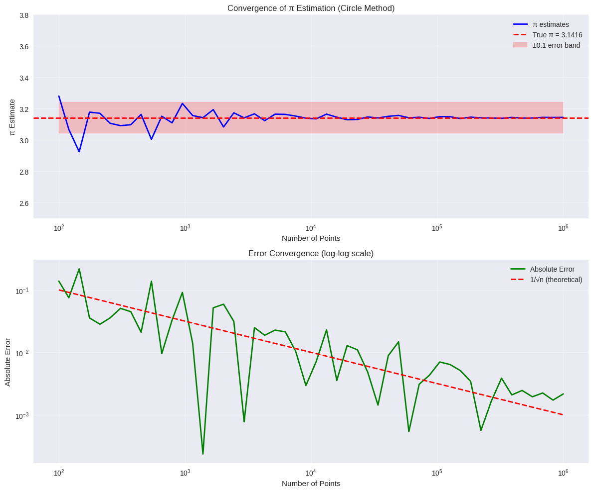
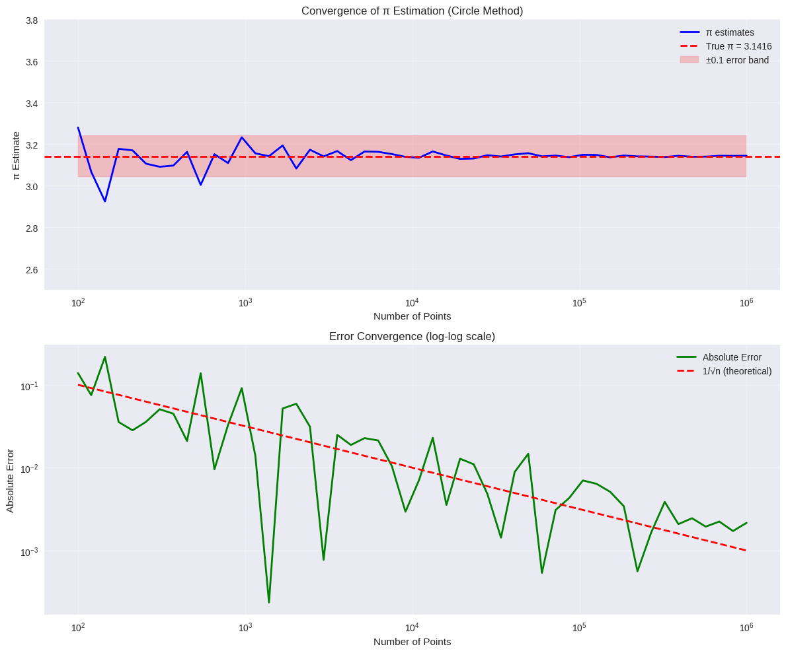
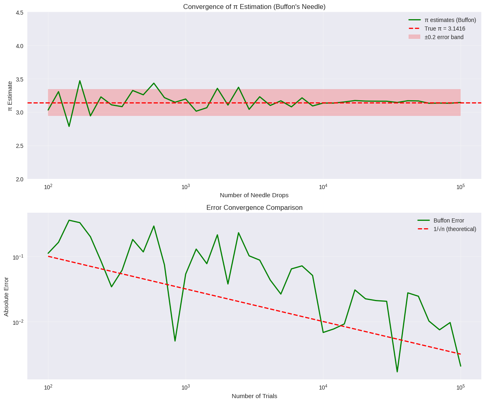
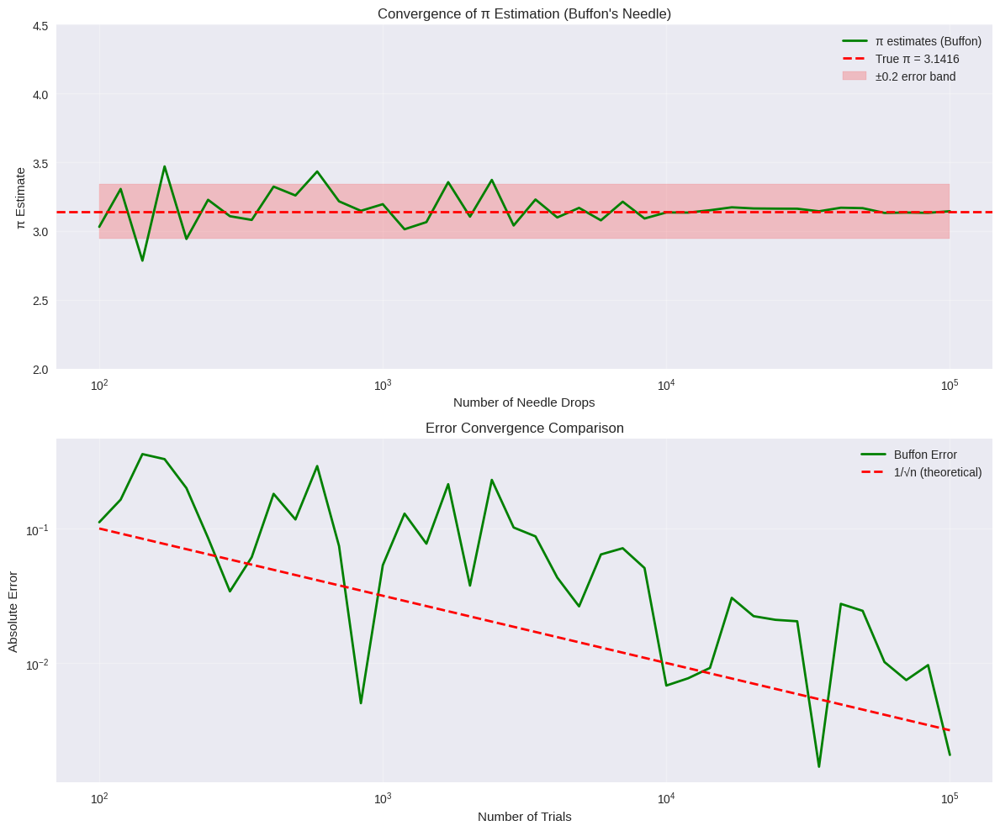
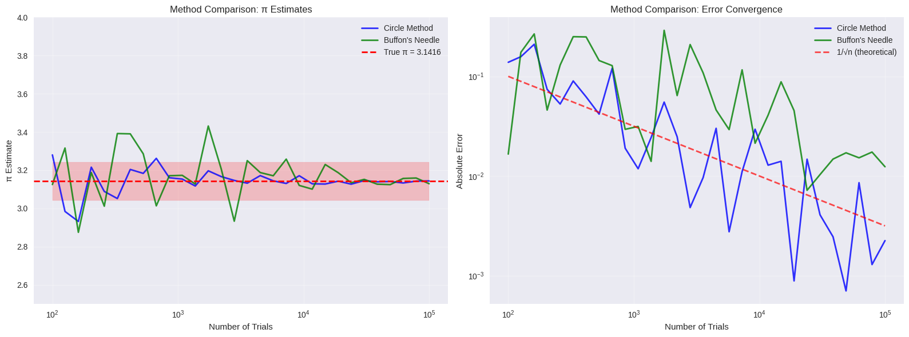

Problem 2
Estimating \(\pi\) Using Monte Carlo Methods
Objective
Estimate the value of \(\pi\) using two classic Monte Carlo methods:
-
Circle-based random point simulation.
-
Buffon’s Needle experiment.
Part 1: Circle-Based Monte Carlo Estimation
Theoretical Foundation
We generate random points in a square and count how many fall inside a circle.
- For a unit circle of radius \( r = 1 \), the area is:
\[
A_{\text{circle}} = \pi r^2 = \pi
\]
- The square enclosing the unit circle (from \((-1, -1)\) to \((1, 1)\)) has area:
\[
A_{\text{square}} = (2r)^2 = 4
\]
- The ratio of points inside the circle to the total number of points approximates the ratio of their areas:
\[
\frac{\text{Points inside circle}}{\text{Total points}} \approx \frac{\pi}{4}
\]
Thus, we estimate:
\[
\pi \approx 4 \cdot \frac{\text{Points inside circle}}{\text{Total points}}
\]
Observations
- Accuracy increases with larger sample size.
- Method is simple, visual, and intuitive.
- Convergence is slow: many points are needed for high precision.
Part 2: Buffon’s Needle Method
Theoretical Foundation
Drop a needle of length \(L\) onto a floor with parallel lines spaced \(d\) units apart.
- If \(L \leq d\), the probability of the needle crossing a line is:
\[
P = \frac{2L}{d \pi}
\]
Rearranging the probability formula gives:
\[
\pi \approx \frac{2 L \cdot N}{d \cdot C}
\]
Where:
- \(N\) = total number of drops
- \(C\) = number of times the needle crosses a line
Circle Method - Point Distribution:
 

Buffon's Needle - Convergence Analysis:
 

Method Comparison:

Convergence and Comments
- Slower convergence than the circle method.
- Larger variance due to probabilistic condition.
- Computationally interesting but not as efficient for π estimation.
Comparison Summary
| Method | Formula | Convergence | Visual Appeal | Accuracy (modest N) |
|---|---|---|---|---|
| Circle Method | \(\pi \approx 4 \cdot \frac{M}{N}\) | Faster | High | Good |
| Buffon’s Needle | \(\pi \approx \frac{2L \cdot N}{d \cdot C}\) | Slower | Medium | Noisy estimates |
Conclusion
Monte Carlo methods elegantly demonstrate the power of randomness in numerical computation. Both approaches estimate π using probabilistic geometry. The circle-based method is faster and more reliable, while Buffon’s needle is historically rich and conceptually unique.